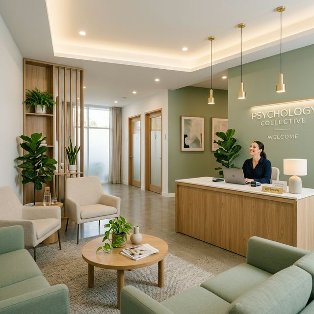

A Avaliação Neuropsicológica é um processo detalhado que investiga como o cérebro processa as informações no dia a dia. Trata-se de uma análise clínica cuidadosa, voltada para compreender a forma como você pensa, sente, resolve problemas e interage com o mundo ao seu redor. Por meio de uma abordagem acolhedora e individualizada, nossos especialistas exploram o funcionamento cognitivo e comportamental utilizando instrumentos modernos e validados, aplicáveis tanto no formato presencial quanto em plataformas digitais interativas. O objetivo é proporcionar maior clareza diagnóstica e compreensão do seu funcionamento psicológico.
Por meio de uma investigação acolhedora do seu funcionamento cognitivo e comportamental, nossos especialistas utilizam instrumentos de ponta, aplicáveis tanto em formato presencial quanto em ferramentas interativas, para trazer clareza diagnóstica.
Acompanhe abaixo as etapas do nosso processo:
"Nosso objetivo não é só apresentar números, mas traduzir a neurociência em um entendimento real e transformador para a sua jornada."Quero agendar minha avaliação
A avaliação é um processo estruturado, humano e altamente investigativo. O nosso método de excelência utiliza múltiplos instrumentos para entender o seu cérebro:
Testes psicológicos e neuropsicológicos avançados e interativos para leitura real da cognição (foco, memória, etc).
Medidas rigorosas focadas no rastreio clínico, mensuração exata de sintomas e mapeamento de diagnósticos precoces.
Inventários comportamentais e emocionais para decodificar níveis de ansiedade, regulação do humor e reatividade.
Coleta de dados adicionais e direcionados para não deixar passar nenhum detalhe fundamental na elaboração do laudo.
Compreensão profunda do seu histórico, queixas sistêmicas, rotina e impactos observados no dia a dia.
Oferecemos suporte especializado para todas as fases da vida, adaptando nossa linguagem e ferramentas para cada paciente.
Avaliação do desenvolvimento, dificuldades escolares, TDAH e autismo através de métodos lúdicos.
Suporte em questões de sociabilidade, foco, organização e transição para a vida adulta.
Investigação de queixas de memória, atenção no trabalho, ansiedade e perfis cognitivos.
Rastreio de declínio cognitivo, demências e preservação da autonomia com envelhecimento saudável.
Excelência técnica aliada a um olhar humano e individualizado.
Profissionais com formação avançada e foco exclusivo em neuropsicologia clínica.
Uso de softwares interativos e as baterias de testes mais modernas do mercado.
Cada laudo é uma história. Nossa prioridade é o acolhimento do paciente e da família.
Excelência clínica focada no seu bem-estar e clareza diagnóstica.
Investigação detalhada das funções cognitivas, emocionais e comportamentais para diagnóstico de TEA, TDAH, Demências e outros.
Saiba mais
Atendimento clínico focado no suporte emocional, manejo de ansiedade, depressão e autoconhecimento para todas as idades.
Saiba maisNosso compromisso é com diagnósticos precisos que respeitam a complexidade humana e abrem portas para tratamentos transformadores.
Investigamos e mapeamos condições emocionais e flutuações de afeto com profundo cuidado e ética diagnóstica. A avaliação desempenha papel essencial no rastreio da intensidade, duração e do impacto cognitivo presente destas oscilações crônicas.


Se você ainda possui incertezas sobre o que esperar de um teste psicológico, veja as respostas ao lado. A transparência na nossa forma clínica é essencial.
De maneira alguma! A psicometria utiliza conversas, jogos visuais e espaciais com regras, exercícios gráficos simples e leitura interativa. É um processo cansativo mentalmente, mas extremamente orgânico e 100% não-invasivo (não há exames de imagem clínica diretos da nossa parte).
Uma bateria padronizada exige no geral de 4 a 8 encontros que podem ser semanais ou aglutinados, dependendo integralmente do que for acordado clinicamente e de qual ferramenta o paciente melhor se adequa, com duração de 40 minutos por sessão.
Totalmente incorreto. Apesar de imprescindível para diagnósticos do espectro autista e TDAH, o neuropsicólogo averígua Alzheimer precoce, declínio mental advindo de stress profundo, e sequelas de intervenções médicas graves com extremo rigor estatístico.
A Neuropsy Saúde é uma clínica de psicologia em Niterói dedicada à avaliação neuropsicológica em todas as idades. Liderada pela psicóloga Charla Menezes (CRP 05/54915), oferece diagnósticos precisos e acompanhamento humanizado.
Guiar pessoas em sua jornada neuropsicológica com excelência e acolhimento.
Ser referência em avaliação neuropsicológica em Niterói e no Rio de Janeiro.
Ética, empatia, inovação e compromisso com o bem-estar.